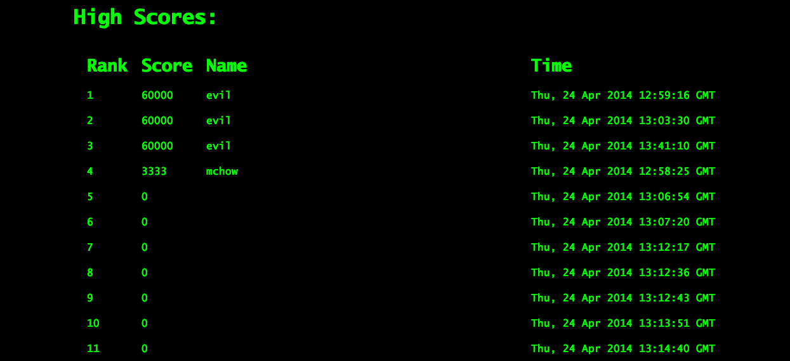
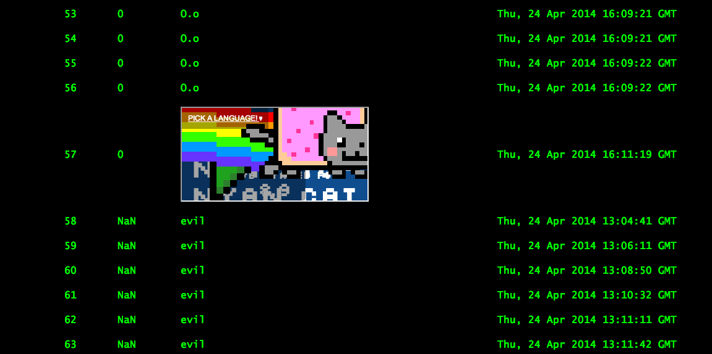

Maya Saxena
Comp 20 Assignment 5
The 2048 Game Center is a web application developed by Win Halelamien for Comp 20 Assignment 4 that maintains data from the game 2048. The application offers an API for submitting a player's final score and grid along with a username and the time the game was finished. The 2048 Game Center's web interface features a scoreboard that displays scores for all players sorted in descending order along with usernames and timestamps for each score. The web interface also allows users to find a player's scores and final grids by username.
The purpose of this assessment is to identify the security vulnerabilities potentially present in this application, and suggest solutions to those problems.
The application was first tested without any knowledge of the source code to determine obvious vulnerabilities that could be exploited by any attacker. Once those problems were identified, the source code for the project was examined to locate any other vulnerabilities.
The main security issues with this application arise from the fact that the data it stores and displays is not restricted or vetted in any way. Anyone with minimum knowledge of the application could store data in the application's database. That data could contain code runs whenever the data is loaded on a web page, affecting the performance of the application, and depending on the code that executes, damaging the user's computer.
2048 Game Center main page/GET API
One of the major security issues with the site is the ability for an attacker to inject script into the fields stored in the database. The data stored in the database is not sanitized in any manner before entry, it is just saved as is. When the application's scoreboard page loads, the saved information from the database is directly inserted into the HTML of the page. If what is stored in the database is appropriate data, there are no problems. However, if it is code, then the code will execute and alter the page. The database itself cannot be accessed in this manner, so the data cannot be changed, but the site itself can be made inoperable.
One effect of this vulnerability can be seen by running
curl --data 'username=<iframe src="http://www.nyan.cat"></iframe>&score=0&grid={}' http://limitless-harbor-3229.herokuapp.com/submit.json. This code inserts an iframe into the scoreboard. Although this does not outright prevent the application from
functioning, it makes the insecurity of the application obvious by displaying incorrect data to all clients.


An attacker could render the website entirely unusable by inserting
<script type="text/javascript"> window.location = "http://www.google.com/"; </script>
into the username field. The script is inserted into the scoreboard page HTML by the application, and it redirects the page to Google as soon as the page loads. This obviously could be used
in a variety of malicious manners at worst, as the page could be
redirected anywhere, but at best it makes it impossible for a user
to use the application for its intended purpose.
This issue can be resolved by sanitizing the input before it is inserted into the database. Characters commonly present in HTML can be escaped so that when the the HTML for the scoreboard loads, any potential malicious code will not execute, maintaining the integrity of the application.
POST API
Although in combination with the above mentioned issue of non-sanitized inputs the severity could be high, alone, the issue is only moderate in severity as it could not lead to a user actively being harmed.
This application has Cross-Origin Resource Sharing enabled for any origin due to the design specification. However, this presents a problem as anyone could post data to the application that will then be stored in the database. Similarly, the data stored in the database can be accessed by anyone. This vulnerability makes it possible for an attacker to entirely circumvent the purpose of the application - to store player's high scores from 2048. And attacker could post any score they wanted from anywhere because there are no restrictions on the POST request.
Instead of allowing all origins to access the application as it is currently:
res.header('Access-Control-Allow-Origin', '*');,
whitelist certain origins explicitly to control the source of data.
MongoDB/POST API